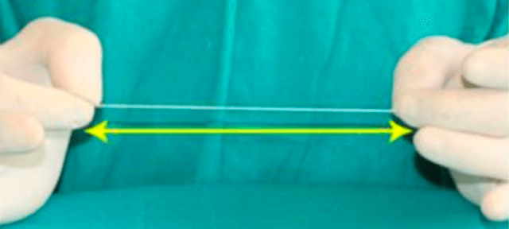
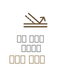
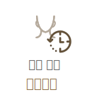
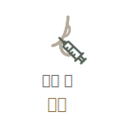
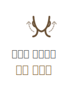

강한 고정력으로
오래 지속되는
#반영구
실리프팅
-

수술 시간
1시간
-

마취방법
수면/국소마취
-

실밥제거
5~7일후
-

내원치료
2~3회
-

회복기간
2~3일후
반영구 실리프팅이란?
실리프팅은 작은 돌기가 붙은 인체에
무해한 의료용 실을 피부 아래로 삽입해
연부 조직을 균일하게 당겨서 늘어진
피부를 당겨주고 탄력 잃은 피부를
팽팽하게 리프팅해주는 시술입니다.
연세자연미성형외과에서는녹지 않는 실
(엘라스티꿈/리본)을 사용해 오랜시간
반영구적으로 효과를 유지할 수 있습니다.
엘라스티꿈
연세자연미에서 사용하는 ‘엘라스티꿈’은
특수 소재의 밴드를 이용하여 딱딱한
일반적인 실과는 달리 실제 인대처럼
자연스러운 움직임과 탄력을 회복합니다.
01
ITALY에서 제조된
특허받은 밴드
ITALY 성형외과전문의 Dr. Sergio Capurro
가 의학적 기술과 노하우를 반영해 개발한
밴드로 탄력실(elaticum)을 이용한
신생인대(neoligament)형성으로 처진
피부와 연부조직을 다시 거상하여 그 효과가
오랬동안 자연스럽게 유지되도록 하는
방법입니다.
02
강한 탄력성
엘라스티꿈은 강한 탄성력으로 피부의
움직임을 방해하지 않고 자유자재로
늘어납니다.자연스러운 움직임과 얼굴
탄력을 회복합니다.
일반실
딱딱하며 길이가 정해져 있음
VS
엘라스티꿈
강한 탄성력으로 자유자재로 늘어남
03
안정적인 조직결합
엘라스티꿈은 미세 실리콘에 폴리에스터가
감싸져 있는 형태 로 밴드 사이 공간에
자가조직이 들어가 수주 안에 인조인대
역할을 하게 됩니다.

리본 리스팅
연세자연미에서 사용하는 ‘리본’은 메쉬와
돌기가 있어 조직을 리프팅하고 측두부
고정메쉬에 리프팅된 상태에서 고정하는
수술방법입니다.
01
안정성이 검증된 제품
리본은 KFDA와 유럽 CE의 허가를 받은
입체구조의 메쉬와 탈장수술, 심장수술,
안과수술, 뇌수술 등에 사용되는
생체적합성이 우수한 폴리프로필렌으로
만들어진 특수코그실로 이루어져 있습니다.
02
안정성이 검증된 제품
리본은 KFDA와 유럽 CE의 허가를 받은
입체구조의 메쉬와 탈장수술, 심장수술,
안과수술, 뇌수술 등에 사용되는
생체적합성이 우수한 폴리프로필렌으로
만들어진 특수코그실로 이루어져 있습니다.
이마 거상술
핵심 포인트
주름의 확실한 개선을 위해
연세자연미는 자세한 상담과 진단을
통해 가장 효과적인 방법으로 수술을
진행합니다.
01

오랜 지속
기존 실 리프팅에 비해 리프팅 효과가
5년 이상 장기 지속됩니다.
02

방향 설정
피부 구조의 이해를 바탕으로
정확한 고정점을 찾아 정확한
방향으로 연조직을 견인합니다.
03
당기는 힘
피부 부위에 따라 늘어짐의 정도가
다르기 때문에 조직을 당겨주는
강도를 조절합니다.
04

테크닉
오랜 경험과 숙련된 기술력으로
결과에 대한 높은 만족 도를 드립니다.
사후 관리 시스템

연세 자연미
SELF CARE 파우치 제공
통증과 붓기를 줄여주고 일상생활로의 빠른
복귀를 위해 수술 후 체계적이고 다양한
사후관리 시스템을 진행하고 있습니다.
함께하면좋은 시술
연세자연미성형외과는 개인의 상태에
따른 노화 증상과 원인에 맞는
여러가지
시술들을 복합적으로 진행하는 맞춤형
안티에이징 수술법
으로 자연스럽게
젊어지는 아름다움을 선물해드립니다.
-

-

-

-

-

연세자연미만의
Anti-Aging
솔루션
티에이징 성형은 미용을 위한
일반적인 젊은 층의 성형과는 접근을
달리해야 합니다.
연세자연미는 노화로 인해 환자가
고민하는 부위를 확실히 개선함과
동시에 수술과 회복에 대한 부담을
줄일 수 있는 안티에이징 성형을
추구합니다.
-
01
화려한 변화보다는 자연스러움이
중요합니다. -
02
수술에 대한 부담이 적어야 합니다.
-
03
기능적인 부분까지 개선되어야
합니다.